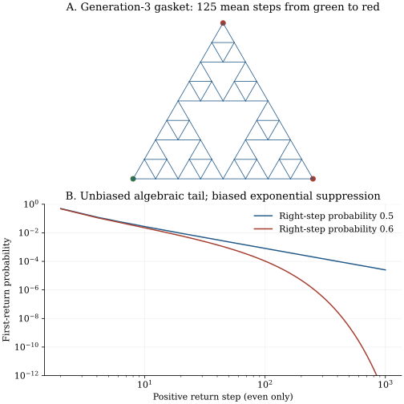

Chapter 21 · Lecture 25
Return laws, recurrence, and fractal transport
Doubling a travel distance need not multiply a diffusive search time by four. A hierarchy of loops can multiply it by five, even though every individual jump follows a Markov rule. Separately, an unbiased line walk returns to its starting site almost surely but has an infinite mean return time. Geometry, state sufficiency, eventual return, and mean return duration are four different properties; this chapter calculates them rather than inferring one from another.
The order follows lecture 25: gasket geometry and exit scaling, renewal of Markov visits, recurrence criterion, biased line returns, and the unbiased heavy tail. The full caption track was read; one frame at 770 seconds confirms the gasket setup but partly obscures the algebra. Finite-graph computations, exact renewal checks, and exercises are additions. Independent audio was not reviewed.
21.1 A graph with loops at every scale L25 2:19
Start with a triangular graph of three vertices connected pairwise by three edges. This is generation zero. Generation $n+1$ consists of three copies of generation $n$, joined at their corner vertices to form a triangle of twice the side length, leaving the central upside-down triangle empty. Keep the shortest edge length equal to one. The resulting finite Sierpiński gasket graph has side length $R_n=2^n$ and vertex count $(3^{n+1}+3)/2$. Each noncorner vertex has four neighbors; each of the three outer corners has two.
A discrete-time simple random walk chooses uniformly among the current vertex's neighbors at each step. Let one outer corner be the starting point and the other two be absorbing targets. The remaining outer corner has its ordinary degree-two transitions; it is not a trap. Let $T_n$ be the expected number of steps to reach either target. This definition fixes both the starting state and the target geometry. A different target set, a fixed embedded-size graph with shrinking edges, or a variable-rate clock would require a different scaling statement.
On any finite graph with these reachable targets, the first-step equations are $T(x)=1+\sum_{y\notin A}K_{yx}T(y)$ for $x\notin A$, with $T=0$ at the target set $A$. The column stochastic transition matrix $K$ has entry $K_{yx}=1/\deg(x)$ when $y$ is adjacent to $x$, and zero otherwise. Consequently the vector of mean times solves $(I-K_{\mathcal T\mathcal T}^{\mathsf T})\mathbf T=\mathbf1$. The transpose is essential because the equation averages destinations from a specified starting vertex. These finite linear equations provide a direct numerical check before an asymptotic interpretation is attempted.
21.2 Eliminate the fine vertices before declaring an exponent L25 7:07
Generation zero has $T_0=1$: the first step reaches a target. For generation one, symmetry leaves three unknown mean times. Call the starting-corner value $a$, the two equivalent adjacent midpoint values $u$, and the midpoint on the opposite side $v$. The first-step equations are $a=1+u$, $u=1+(a+u+v)/4$, and $v=1+u/2$. The two target values vanish. Substitution gives $u=4$, $a=5$, and $v=3$. A loop permits many unsuccessful excursions before an outer target is reached.
Observe a refined walk only when it reaches a different old-generation vertex. Inside a refined triangular cell, the calculation just made gives mean five fine steps from a retained corner to either of its two neighboring retained corners. Symmetry gives equal exit probabilities. At an old vertex incident to two cells, the same reflection symmetry among its four available old neighbors gives uniform coarse exit choices; the expected waiting time to a different old vertex is again five, by the identical local first-step system. Thus the retained-vertex trace has exactly the old simple-walk transition rule.
Apply the strong Markov property at successive retained-vertex hits. Conditional on each coarse starting vertex, its next coarse jump has mean fine-step cost five, whether that vertex has two or four neighbors. Summing expected costs up to absorption gives $T_{n+1}=5T_n$; the expected number of coarse jumps is finite on these finite graphs. Induction from $T_0=1$ proves $T_n=5^n$. Taking logarithms with $R_n=2^n$ proves the exponent. ∎
The laboratory solves all vertex equations through generation six, independently of this elimination argument, obtaining mean times one, five, twenty-five, and their successive factors of five. The construction supplies a dynamical exponent beyond the Euclidean value two. The geometric similarity dimension is instead $d_f=\log3/\log2$, because the graph has three half-scale copies. One measures travel time; the other measures geometric proliferation. A general relation involving a spectral dimension requires a heat-kernel scaling theorem; it does not follow from merely taking these two logarithms.
The slower exit scaling is compatible with a displacement scale $R\propto t^{1/d_w}$ and mean-square scaling $t^{2/d_w}$ in the corresponding infinite-fractal theory. The exact result proved here is the finite-family exit relation. The laboratory alone does not prove an infinite-graph displacement theorem, and a short finite-size fit on another graph would be evidence for an exponent rather than an exact renormalization law.
21.3 A first return starts after time zero L25 21:18
For a time-homogeneous discrete Markov chain started at state $i$, let $u_n=\Pr_i(X_n=i)$ with $u_0=1$. Define its positive first return time $\tau_i^+=\inf\{n\geq1:X_n=i\}$ and $f_n=\Pr_i(\tau_i^+=n)$. It may have value infinity. If self-loops are allowed, $f_1$ may be positive; for a nearest-neighbor line walk without holding, all odd-time returns are impossible. The sequence $u_n$ includes repeated visits, while $f_n$ excludes any earlier positive-time visit.
Every path at $i$ at time $n\geq1$ has a unique first positive return $k\leq n$. Conditional on that event, the Markov property restarts its return probabilities from $i$ for the remaining $n-k$ steps. Adding mutually exclusive first-return alternatives gives the convolution. Absolute convergence inside the unit disk allows multiplication of generating functions, yielding $U=1+FU$ and then (21.2). For real $z\uparrow1$, monotone convergence gives $F(z)\uparrow r=\sum f_n$, the eventual return probability. If $r\lt1$, then $U(1)=1/(1-r)$ is finite. If $r=1$, $U(z)$ diverges. This proves the criterion. ∎
The sum of the $u_n$ is the expected total number of visits including the initial one, not the probability of any visit. Visits at different times overlap as events and cannot be added to form a union probability. First-return alternatives are mutually exclusive and can be added. This distinction is the mathematical reason renewal transforms are so useful. A recurrent state may be positive recurrent, with finite mean positive return time, or null recurrent, with infinite mean. A transient state has $r\lt1$.
21.4 Bias suppresses returns without forbidding them L25 35:06
Let the integer line walk take independent right steps with probability $p\in(0,1)$ and left steps with $q=1-p$. Returning to zero after $2m$ steps requires $m$ of each, giving $u_{2m}=\binom{2m}{m}(pq)^m$; odd-time values vanish. The binomial expansion of $(1-x)^{-1/2}$ has coefficient $\binom{2m}{m}/4^m$, as follows by successively differentiating at zero. Therefore $U(z)=(1-4pqz^2)^{-1/2}$. The initial term one is included; omitting it changes the renewal algebra.
Substitute the explicit $U$ into $F=1-1/U$. The binomial coefficient of $z^{2m}$ in $1-\sqrt{1-4pqz^2}$ is $\binom{2m}{m}(pq)^m/(2m-1)$; it can also be verified by differentiating the generating function and matching its coefficients. Monotone convergence as $z\uparrow1$ gives $r=1-\sqrt{1-4pq}$. Since $p+q=1$, $1-4pq=(p-q)^2$, proving (21.4). ∎
At $p=0.6$, return probability is 0.8, not zero. A walk can initially step against its drift or execute a finite excursion before drifting away permanently. At $p=q=1/2$, return probability reaches one. At the unidirectional endpoints $p=0$ or one, the limiting return probability is zero. The probability of hitting a specified point to the right is a different quantity: chapter 20 gave one with rightward drift and $(p/q)^m$ against leftward drift. Returning requires leaving and undoing that first displacement, so the two probabilities cannot be interchanged.
21.5 Null recurrence is not equilibrium sampling L25 53:06
For the unbiased law, Stirling's factorial asymptotic gives $\binom{2m}{m}\sim4^m/\sqrt{\pi m}$. Applying it to (21.3) yields $f_{2m}\sim1/(2\sqrt\pi\,m^{3/2})$. The probabilities sum to one, but $\sum_{m\geq1}2mf_{2m}$ has a divergent $m^{-1/2}$ tail. The same fact follows by differentiating $F(z)=1-\sqrt{1-z^2}$: its derivative $z/\sqrt{1-z^2}$ tends to infinity at one. Monotone convergence identifies this derivative limit with the infinite expected return step count.
A recurrent return can be almost surely finite while its expectation diverges. This is null recurrence. It supplies no normalized uniform equilibrium distribution on the entire integer line. To check directly, a stationary mass sequence would obey $\pi_j=(\pi_{j-1}+\pi_{j+1})/2$, so its second difference vanishes. The general sequence is affine in $j$; nonnegativity on both tails forces it to be constant, and no positive constant sequence is summable. Recurrence and a stationary probability measure therefore separate on this infinite state space.
With nonzero bias, $F'(1)=4pq/|p-q|$ is finite and equals the unnormalized finite-return first moment $\sum nf_n$. The unconditional return time still has an atom at infinity and infinite extended expectation. Conditional on eventual return, its mean is $F'(1)/r$; for $p=0.6$, it is $4.8/0.8=6$ steps. A finite mean conditional on success does not make the state positive recurrent, because the return probability is below one. This distinction matters when simulation averages are computed only over returning paths.
21.6 Computational laboratory: solve before fitting
The laboratory constructs gasket edges recursively using exact integer coordinates, counts unique shared vertices, builds neighbor lists, and solves the sparse backward linear system. No fitted exponent is used in computing the mean times. It verifies $T_n/5^n=1$ to numerical tolerance for generations zero through six. The largest graph has 1,095 vertices. It also evaluates first-return masses by logarithmic factorials, checks one hundred renewal convolutions against exact return probabilities, and sums 10,000 even-time coefficients.
side=1: vertices=3; mean exit=1.000000 steps side=2: vertices=6; mean exit=5.000000 steps side=4: vertices=15; mean exit=25.000000 steps side=8: vertices=42; mean exit=125.000000 steps side=16: vertices=123; mean exit=625.000000 steps side=32: vertices=366; mean exit=3125.000000 steps side=64: vertices=1095; mean exit=15625.000000 steps walk dimension=2.32192809 p=0.5: return=1.000000; partial mass=0.99435817; partial moment=112.836506 p=0.6: return=0.800000; partial mass=0.80000000; partial moment=4.800000
The unbiased partial mass is close to one while its partial first moment is already large and continues to grow. The biased partial mass converges rapidly to 0.8; renormalizing it to one would conceal transience. Exact absorbing-chain or renewal calculations make these effects visible without waiting for rare long simulated excursions. For much larger gaskets, sparse factorization and storage become material costs; an iterative solve or exact decimation may be preferable.

import math
def first_return_even(m, right_probability):
if m < 1 or not 0 < right_probability < 1:
raise ValueError("require positive m and probability in (0, 1)")
p = right_probability
return math.comb(2*m, m)*(p*(1-p))**m/(2*m-1)
print(first_return_even(1, 0.5))
print(first_return_even(2, 0.5))The snippet prints 0.5 and 0.125 and changes no files. It is intended for modest integer $m$; the full lab uses logarithmic factorials for a stable long tail. The full program writes output and JSON, makes no network calls, and overwrites these products on rerun. Run it and then the plot generator with the declared dependencies.
21.7 Keep the geometric and probabilistic limits distinct
Finite connected gasket graphs with reachable traps have finite mean exit times. The infinite graph limit can change recurrence and normalizability; it is not established by labeling the finite graph ergodic. The exact exponent here belongs to nearest-neighbor uniform discrete-time jumps with the stated family of targets. Holding times, long jumps, random conductances, or disconnected pieces can alter it. On the line, transience concerns the atom at infinite return time, while null recurrence concerns the moment of an almost surely finite positive return. The next chapter tests how dimension changes the return criterion and how a separate physical-time clock changes transport.
21.8 Exercises with worked solutions
Exercise 21.1 — A time-zero mistake (conceptual)
A return law is defined to include $f_0=1$. Why does applying (21.2) to it fail?
Worked solution
The initial visit occurs on every path and is not a first positive return. If it is included as the first return, the resulting time is identically zero; its generating function is one. Then $1/(1-F)$ is undefined, and a decomposition by later unique first returns has lost its content. Keep $u_0=1$ as the initial renewal and start $f_n$ at $n=1$. For a chain with a holding probability, a one-step return is valid and should not be discarded; only the time-zero visit is excluded.
Exercise 21.2 — Transience hidden by conditioning (conceptual)
A biased walk has a measured six-step average among eventually returning paths. Does this imply positive recurrence?
Worked solution
No. For $p=0.6$, the calculation gives conditional mean six but eventual return probability 0.8. One fifth of paths never return. Positive recurrence requires probability one of return as well as finite mean. The extended unconditional return time is infinite on that one-fifth event, hence has infinite expectation. A data collection that retains only completed returns cannot estimate the missing probability without separately tracking failed or censored trials.
Exercise 21.3 — Solve the first refined gasket (derive)
Use the three symmetry equations to compute the mean values at the starting corner, its adjacent midpoints, and the opposite midpoint. Check each equation after substitution.
Worked solution
From $a=1+u$ and $v=1+u/2$, the middle equation becomes $4u=4+(1+u)+u+(1+u/2)=6+(5/2)u$. Hence $u=4$, $a=5$, and $v=3$. The corner equation reads $5=1+4$; the adjacent-midpoint equation is $4=1+(5+4+3)/4$; the opposite-midpoint equation is $3=1+4/2$. The constant one in every equation is elapsed time for the first step, including a step that goes immediately to a trap. Omitting it for trap-directed jumps understates the time.
Exercise 21.4 — Recover the return tail (derive)
Starting from the explicit unbiased first-return masses, derive their large-$m$ asymptotic and the growth of the truncated first moment through step $2M$.
Worked solution
Stirling gives $\binom{2m}{m}4^{-m}\sim(\pi m)^{-1/2}$. Dividing by $2m-1\sim2m$ gives $f_{2m}\sim[2\sqrt\pi\,m^{3/2}]^{-1}$. Therefore $\sum_{m=1}^M2mf_{2m}\sim\pi^{-1/2}\sum_{m=1}^Mm^{-1/2}\sim2\sqrt{M/\pi}$. The last asymptotic follows by upper and lower integral bounds for the decreasing function $x^{-1/2}$. The missing probability mass decays like $1/\sqrt{\pi M}$, so apparent normalization can improve while the truncated mean diverges. This is the discrete counterpart of the half-line Brownian tail.
Exercise 21.5 — Test an exponent without assuming it (compute/design)
Describe how to distinguish a measured walk exponent from the exact gasket scaling in a new graph family. Which details of the laboratory prevent a circular check?
Worked solution
Construct the actual graph and targets at several scales, use its neighbor probabilities to solve the backward equations, then estimate $\log[T(2R)/T(R)]/\log2$ with numerical error estimates. Do not set time values equal to a hypothesized power before fitting. Here edges are recursively generated, shared vertices are merged, and the sparse linear equations depend only on adjacency and absorbing vertices. The factor five is checked afterward. Exact decimation supplies an independent proof for this graph family; a stable finite-size ratio on an unrelated graph would remain numerical evidence. Changing target shape between scales can create an apparent exponent that reflects changed experiments.
Exercise 21.6 — Quantify a biased conditional return (compute/design)
For $p=0.6$, compute total return probability, finite-return first moment, and conditional mean. Predict the same three quantities when $p$ is replaced by 0.4.
Worked solution
The return probability is $r=1-|2p-1|=0.8$. Differentiating $F$ gives $F'(1)=4p(1-p)/|2p-1|=4.8$. Dividing by $r$ gives conditional mean six steps. Reflection of every path exchanges right and left, so replacing 0.6 by 0.4 leaves all three values unchanged. It does reverse the drift and changes which one-sided target is easy to reach; return to the origin is reflection invariant. The lab's sum over 10,000 even times reproduces the finite-return moment 4.8, while its unnormalized probabilities sum to 0.8.
21.9 Sources and attribution
- V. Balakrishnan, IIT Madras, lecture 25, NPTEL 115106089: gasket first-step construction, return renewal, line return probability and null recurrence.
- NIST DLMF 5.11: classical gamma and factorial asymptotics underlying the stated Stirling limit. The renewal and finite-graph proofs are supplied directly here.
The sparse solves, exact convolution checks, plots, and six solutions are original teaching constructions. The exact gasket claim is limited to the specified finite graph family and stopping rule; no general fractal heat-kernel theorem is inferred from the numerical calculation.